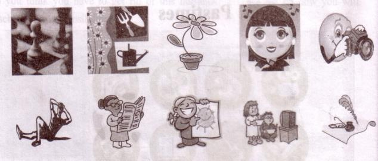
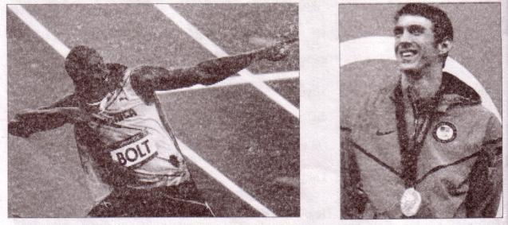
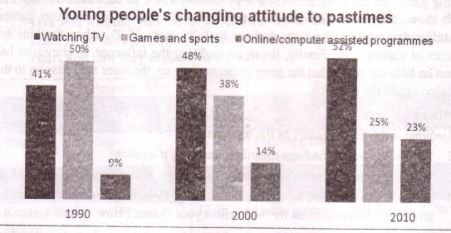
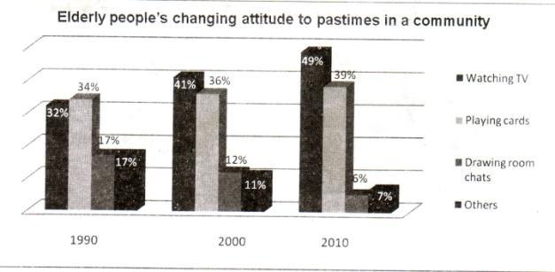

Lesson 1: Have you any favourite pastime?
A. Look at the pictures. What are the people doing here? When do people do these kinds of work?

B Read the dialogue and answer the questions.
Tiya : Anusha, what happens? You've sports trousers, T-shirts, sports
shoes, and a carry bag! Where are you coming from? And you look tired!
Anusha : Not exactly, Tiya. I'm great because I'm just from the gym.
Tiya : Do you go to the gym regularly?
Anusha : Yes, I do. I go twice a week. It's one of my favourite pastimes.
Tiya : Really! Going to the gym is your favourite pastime! You make me
laugh!
Anusha : Why not? I like sports because I like to be fit. I'm not a
lazy person like you!
Tiya : What do you do there?
Anusha : I do yoga.
Tiya : Don't you have any other pastimes?
Anusha : Hmm... yes, I have. I like playing chess, painting, and reading
book when I'm free. I also like photography but I'm yet to learn it. What do you do for pastime?
Tiya : I like watching TV, listening to music, reading books and
magazine and playing games on the computer. I do like
gardening. But we don't have sufficient space. So I do pot planting. By the way, I don't know much about yoga. Would you please tell me about it?
Anusha : Sure! I'll give an article on it. It will help you know about it. Okay?
l5Questions
l. Why does Anusha like going to the gym?
2. what are her pastimes?
3. Make a list of Tiya's pastimes.
4. How will Tiya learn about yoga?
C . Read the following texts. Then check (√) the statements below:
Yoga: Tap into the many health benefits
Suppose your kids are demanding the latest video game, your boss wants that report done today by five, and your partner wants to know what’s for dinner tonight. Stress and anxiety are everywhere. In this situation, to keep fit as well as to give them the best you need to do something. And here comes yoga to help you.
Understanding yoga
Yoga is a kind of posture and breathing exercises. It brings together physical and mental disciplines to achieve peace of body and mind, helping you relax and manage stress and anxiety. Traditional yoga puts emphasis on behavior, diet and meditation. But if you’re just looking for better stress management –and not an entire lifestyle change , yoga can still help. Yoga trainers gradually choose easier to complex activities for participation. However, all practitioners do not necessarily need the same kinds of practice.
The health benefits of yoga
The potential health benefits of yoga are numerous and may include.
-
Stress reduction. With its quiet, precise movement, yoga draws you focus away from you busy, chaotic day and towards calm as you move your body through poses that require balance and concentration.
-
Increased fitness. As you learn and refined new poses , you may enjoy improved balanced, flexibility , rang of motion and strength. And this means you're less likely to injure yourself in other physical endeavors or in your daily activities.
-
Management of chronic health condition. Yoga might help with a variety of health condition, such as cancer, depression, pain, anxiety and insomnia, fatigue and mood. Yoga can also help reduce heart rate, and blood pressure .
-
Weight loss. If you're over weight or have eating disorder, yoga may help you make the healthy lifestyle changes necessary to change control of your eating and drop those extra pounds.
While you should not expect yoga to cure you are offer you relief 100 percent, it can help some health conditions when combined with standard treatment. And if you already enjoy good health, yoga can be an enjoyable supplement to your regular fitness routine.
16D . Work in pairs. Talk about these questions. Give your own opinions.
1. How does exercise work on our memory?
2. What other benefits can you think of from exercise?
3. What is the most important benefit of exercise to you and why?
E . Complete the sentences.
a. Yoga is a practice of [dash]
b. Traditional Yoga works through [dash]
c. Yoga is very effective in managing [dash]
d. Through the poses of balance and concentration Yoga [dash]
e. [dash] results in increased fitness.
f. Yoga can reduce or work for [dash]
g. Yoga can control [dash]
h. Yoga cannot cure 100 percent, but [dash]
F . Check (√) the statements about yoga below.
|
a. |
Yoga improves fitness. |
- |
e. |
It works both on body and mind together. |
- |
|
b. |
Yoga has little to do with eating habits. |
- |
f. |
It helps practitioners undergo similar level of difficulty. |
- |
|
c. |
It may differ according to doer levels. |
- |
g. |
If you know yoga, you have better control over your real life hazards. |
- |
|
d. |
It helps people shake off all types of physical and mental disorders. |
- |
h. |
It also helps you live longer. |
- |
G . Read the text.
Hi, I'm Shyam. I'm from Magura. Though district headquarters, it's a small town. I'm in grade 9 now in Chander Hut Bidyaloya. I love games and sports very much. My father was an athlete in his student life. He inspires me to follow his footsteps and take part in games and sports or do some exercise besides my studies. So I get up early in the morning and take a walk with my father almost every day. We walk for about an hour. At school, during break I play kabadi, gollachut, badminton, table tennis, and carom. Sometimes I practice the high jump and the long jump outside the school campus. Playing football in the nearest college ground is a passion for me. I like watching television too.
17I watch sports programmes on different TV channels during my free times. I'm a fan of National Geographic, Discovery, and Animal planet for their documentaries as they are quite interesting as well as educative. Recently my father has presented me with a camera as he was very happy with the results of my junior School Certificate exam. When I hold the camera, I feel so excited! I wish I could be an amateur photographer in future - not to snap only personal photographs at different parties but to shoot our beautiful Bangladesh. I'm sure that soon photography will be my most favourite pastime.
H . Work in pairs. Read the statements of the following grid. First match the parts in Column B and Column C to make complete sentences. Then make questions for the statements in Column A.
|
Column A |
Column B |
Column C |
| What [dash] When [dash] How [dash] When [dash] Who [dash] How long [dash] Why [dash] What [dash] | Despite the fact that Magura is a district headquarters, His father was an sportsperson He encourages him for games and sports Shyam enjoys playing different games and sports He walks They walks He prefers programmes on nature and life He watches sports programmes | Beside his studies It is a small town In his student life During break at school On different TV channels. With his father For their educative Values For about an hour |
I Write about your own pastime following the model in G.
Lesson 2: Reading really helps!
A . Read the conversation and tell what Anusha is going to read.
Anusha :Tiya, hope you enjoyed the article on yoga.
Tiya :Yes, it's great. By the way, Anusha, how did you enjoy London Olympics as a sports lover?
Anusha :People rightly say that it is the greatest show on earth. I'm still thrilled to
remember what Michael Phelps and Usain Bolt have shown. Amazing!
Tiya :Right you are. They are incredible. However, I've got an interesting article in the net on Michael Phelps and Usain Bolt. You might like it and take part in the debate on who is better between these two greats. Please read it.
Anusha :Ahh... Michael Phelps and Usain Bolt! Thank you Tiya! I would love to read it.
B . Read the text and answer the following questions.
Michael Phelps, Usain Bolt are great, but who's better?
With the curtains closing on the 2012 London Olympics, it's impossible not to look back and reflect on the greatest performances by Olympic athletes.

[Photo: Kirby Lee. USA TODAY Sports]
The Olympics have many memorable moments and athletes we'll remember by name alone. The list is quite big. Michael Phelps and Usain Bolt are the latest addition to this list of the bests. They make London Olympics stand apart. If there is any question like this: "What is the standout performance of London 2012? , perhaps the answer is " The London Games gave us Michael Phelps vs. Usain. Bolt." The first one
19is an already decorated Olympian, who puts the finishing touches on his great athletic careers And another comes up with a new definition of fast. Two of the most popular Olympic sports, sprinting and swimming, saw their two biggest stars and captivated ,audiences. They'd also dominated the 2008 Beijing Games, but Phelps and Bolt cemented their legacies in London. Phelps, the American swimmer, passed gymnast Larissa Latyniafor the most Olympic medals ever. Bolt was the third man to repeat as a 100-meter gold medalist and the first as a 200-meter gold medalist, and he broke his own Olympic record by running the 100 in 9.63 seconds. Once Phelps and Bolt were back in their pool and track, the story lines changed.
Phelps is the most-decorated Olympian ever, with 22 overall medals: 18 gold, two silver, two bronze. Bolt is the most accomplished Olympic sprinter, with the unprecedented double, making clear that he's the fastest man in the world.
But there's a debate: Who had the better Olympics? It'd be tough to top Phelps' eight gold medals in Beijing, but what if we're only talking London?
London was Phelps' grand finale. He won four gold’s and two silvers in seven events, and he says he'll never race again.
London was Bolt's chance to prove he's still the greatest. Bolt wins six gold medals in six Olympic finals. He is the first man ever in the history of the modern Games to sweep the 100 and 200 in back-to-back Olympics. Not to mention the addition of back-to-back relay gold’s.
And Bolt became a legend, in his own words. Phelps already was. Bolt is just 25 years old, so there is no telling how long he can be on top of the sprinting world. What if he decides to "retire" from sprinting to focus on the 400 meters, just to break another world record or two? It would be amazing- and entirely plausible for him to accomplish.
Who had the better 2012 Games? You tell. us, let the debate begin.
[adapted from USA Today, Sports London 2012]
Questions
1. What makes London Olympic 2012 exceptionally sensational?
2. How are Phelps and Bolt brilliantly similar and different?
3. Between these two Olympians who has bagged the highest honour within the same time frame?
4. What is special in Bolt so far?
5. flow does Bolt evaluate himself?
C . Make two flow charts on Michel Phelps and Usain Bolt. The first two are done for you.
20Michael Phelps
| the greatest swimmer ever |
- |
- |
- |
Usain Bolt
| the most successful sprinter |
- |
- |
- |
D. Read the following text and complete the blank spaces with the appropriate words from the box below.
|
answer |
sprinter |
Olympians |
speed |
Olympics |
swimmer |
|
debate |
legends |
retired |
prove |
histories |
biggest |
These are the stories of two most successful Olympians of the history. While one is famous as the fastest [dash] the other as the fastest [dash] of the world. However, both are unparalleled for their [dash] in their own field. They made history in the Beijing [dash] They have made newer [dash] in the London Olympics too. They are the living [dash] now. Though Phelps has [dash] from his race, Bolt has prospects to[dash] himself in the next Olympic as well. After the [dash] show on earth is over in London, this [dash] will go on - who is better. Only time will [dash] this question.
E . Work in pairs. Decide who is better between these two bests? Give arguments in favour of your decisions.
Lesson 3: Change in pastime
A . Read the text.
Childhood outdoor pastimes 'in decline'
Traditional childhood pastimes of climbing trees and playing conkers are in decline, according to survey by the RSPB (Royal Society for the Protection of Birds). It's a charitable organization registered in England and Wales.
The survey shows that people under 34 recall far fewer such childhood outdoor experiences than their counterparts over 55, according to a survey by RSPB.
21People were asked which of 12 Childhood outdoor experiences they could remember. The answer included making dens, daisy chains, climbing trees, playing conkers and feeding birds. Four out of five boys climbed trees and the same number of girls made daisy chains. But the survey showed the numbers declining among the newer generations.
Some 15% more of those aged over 55 had these outdoor experiences in their childhood, compared with those between 15-34 years old. Some 92% of the public agreed that experiences of nature were still important to children, and agreed that schools should play a role in providing them to all children.
The survey has highlighted the positive impact of contact with nature on a child's education, health, well-being and social skills. At the same time, there has been a decline in these opportunities, with negative consequences for children, families and society - a condition now known as nature deficit disorder.
Mike Clarke, chief executive of the RSPB, will meet parliament members on Tuesday to urge the government to join other organizations in providing children with first-hand experiences of the natural environment. ... "We believe this guidance should include the many positive impacts to children of having contact with nature and learning outside the classroom."
[adapted from BBC news 6 September 2010]
B . Read the following words and write their meanings understanding from the context. If you don't understand, check the words from a dictionary.
conkers [dash]
dens [dash]
decline [dash]
highlight [dash]
impact [dash]
consequence [dash]
disorder [dash]
urge [dash]
22C . Read the following statement taken from the text in A and say what is compared. Find out the other comparison in the text above.
The survey shows that people under 34 recall fewer such childhood outdoor
experiences than their counterparts over 55, according to a survey by Ipsos Mori
for RSPB.
D . Do you agree that children may have better impact on them if they have more contacts with nature? Make a list of the benefits or harms they may have if taken to nature frequently.
E . Speak to the senior citizens in your home or community. Ask them about their pastime activities and take notes on them. Then write a paragraph in this style in Section A to show the differences. Also mention why this change has taken place.
Lesson 4: Change in pastimes in Bangladesh
A . Tiya and Anusha decided to make a survey on students' pastimes in their class. After the survey they presented their findings in a chart. Look at the chart and read how they explain their findings.
|
For classes 9-10 |
For classes 5-6 | ||
|
Doing game, and sports |
22.3% |
Watching television |
31.2% |
|
Watching television |
17.2% |
Playing games on computers |
20.9% |
|
Chatting with friends |
13.7% |
reading books or magazines |
11.70% |
|
Reading books or magazines |
12.9% |
doing games and sports |
9.2% |
|
Gardening |
10.7% |
Attending social programs such as music, recitations or debates |
7.8% |
|
Attending social programs such as music, recitations or debates |
9.1% |
Chatting with friends |
6.7% |
|
Playing games on computers |
8.2% |
Gardening |
6.1% |
|
Others |
5.9% |
Others |
6.4% |
Tiya: Hello everyone! My name is Tiya. My friend, Anusha and I are going to do a presentation on Pastime Habits of Classes 9 and 10 students in our school. There are 120 students, 60 in class 9 and 60 in class 10. The classes have gender equity. Each class has 30 male and 30 female students. The survey shows that 22.3 percent of students in classes 9-10 like games and sports as their most favourite pastime, which
23Is the 4th option given by classes 5-6 students. Watching television is the second choice (17.2%) by the first group in contrast to 31.2% of the second group. It is noteworthy that watching television is the first choice of the second group. A considerable number (13.7%) of 9-10 students like to chat with their friends and thus it becomes the third popular choice in the graph while this becomes one of the less choices by the younger kids. Only 6.7% of the kids take it as their first priority. It is interesting that both the groups like reading books. 12.9% of students of 9-10 take it as their favorite’s pastime. The number is 11.7% for Classes 5-6 students. Besides, gardening is voted (10.7% of students) to be the 5th preference by the grown up group though it is not that much liked by the younger group. Only 6.l % young kids are involved in it. This is interesting that though the higher number students in classes 9-10 prefer attending social programs (9.1%) than students of classes 5-6 (7.8%), yet as a choice, it is preferred by the later group. It is the 5th choice for them while to the older group it is the 6th. Young kids have greater fascination for games on the computers (20.9% of learners like it as their first choice). The graph shows that as the kids grow up, they lose their passion for computer games. According to the graph, the ratio declines to 8.2% from 20.9% when the kids are students of classes 9-10. Finally, it can be said that the influence of television has impact on both the groups but the more students grow up, the more they pass on to the fields/gym.
Questions
1. What is the gender policy of the surveyors?
2. What is the survey findings regarding watching television?
3. Which age group is more interested in socializing with others?
4. According to the chart, how do the kids change their pastimes when they are grown up? Does the chart for 9- 10 reflect your change? How?
B. Work in groups. Make a chart on the pastimes of the students in your class and present it to your class.
Lesson 5: Pastimes vary
A . Read the dialogue. What is it about? Do you agree or disagree?
Tiya : Anusha, I really wonder how pastimes vary from generation to
generation.
Anusha : Oh, yes. Do you know why?
Tiya : I don't know exactly. Maybe time is a big factor.
Anusha : You are Right. Time changes many things. It changes our tastes and abilities. Technology has roles too. Look, there was a time when playing in the fields was very popular because we had many open fields around. Going to neighbor's house or hanging out in groups were popular pastimes as well.
Pae-24You won't see these pictures now. The process of urbanization, the satellite aggression, and people's dependence on technology have changed our lifestyle. Now boys and girls of urban and semi-urban areas are more dependent on the computer whether it is through social networking, video games, or computer assisted programmes.
Tiya :Right. But how do you know all these things, Anusha?
Anusha : Oh.... I read an interesting article on people's changing pastimes. It
analyses the issue through a graph. Here it is. Read and you will enjoy it,
I guess.
B . Read the article. Underline the words/expressions used in the article to show the rise and fall of any data. The first one is done for you in the text.

There is change in people's trends towards favourite pastimes. A recent survey shows that during the last twenty years, teenagers have gone through significant changes in choosing their pastimes. The survey results are presented through a graph, which shows that there is a steady rise in young people's tendency to watch TV. In 1990, 41% of teenagers liked watching TV, which increased to 48% in the next ten years, and it further increased to 52% in the next decade. Unfortunately, the picture is grim in terms of young people's attraction to open field games and sports. When 50% of youngsters opted for games and sports in the 90s, 12% withdrew themselves from it after a decade making it 38%. Unfortunately, the falling tendency persisted through the next ten years and by 2010, it came to 25%. Though the young people have dissociated themselves noticeably from games and sports, there is a sharp and solid increase in their association with online or computer assisted programmes. In 1990 when the users of online or computer for pastimes were only 9%, in 2000 the number
25nearly doubled and reached 14% with a rapid increase in the next ten years when it shot to 23%.
The survey also explains the reasons for this change. It says that television has become a part of everyday life even to the underprivileged section of people. This result in young people's choice for watching TV as one of the most favourite pastimes. The increasing urbanization has reduced the number of open fields.Therefore; there is a fall in selecting games and sports as favourite pastimes, though it’s not any good news for the country. And the reason of selecting the computer assisted or an online programme is that computer technology is getting cheaper, easier, and more popular every day. Indeed our young generations are stepping to an e-world.
C . Now work in groups and analysis the following graph.
